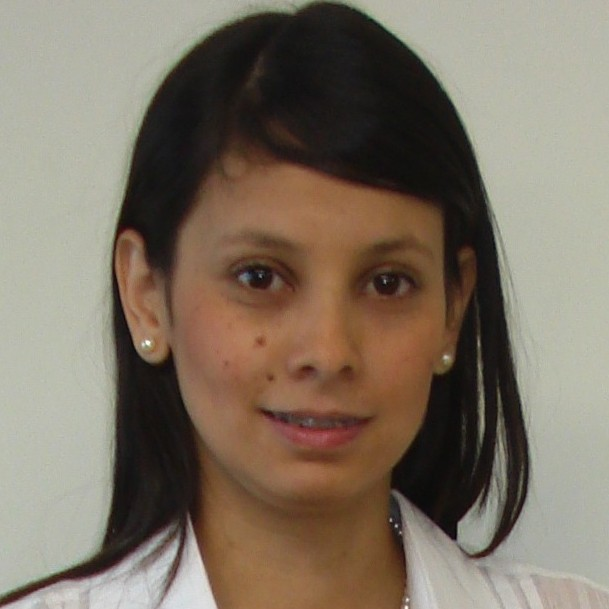

PhD Student
| Ph.D. student in the Department of Electrical and Computer Engineering at University of Delaware. She is currently working in image processing and hyperspectral imaging. She has worked in applying artificial intelligence techniques in geomechanics and these issues have become their main concern especially the recognition and classification of patterns and the software engineering. | |
Research Areas |
|
|
Artificial intelligence Light fields |
Compressive sensing Pattern Recognition |
Education |
|
|
Ph.D. Electrical and Computer Engineering Concentration in Signal Processing, Communications and Control University of Delaware, Newark, DE, USA 2013-Present M.Sc. Computer Science and Informatics B.S. Computer Science |
|
Publications |
|
| Journal Papers
1. L. V. Galvis, I. L. Manotas, F. Cardozo and H. Arguello. “Processes and methodologies within the Research Group in Biomedical Engineering”, Dialéctica Journal, Colombia, Vol. 27, No. 1, pp. 32-42, (2011). 2. L. V. Galvis, H. Arguello, D. Tarazona, “Digital image processing and artificial intelligence applied to oil well drilling”, Revista Fuentes El Reventon Energetico, Vol. 9, No. 1, (2011). 3. L. V. Galvis, C. Ochoa, H. Arguello, J. Carvajal, Z. Calderon, “Estimation of mechanical properties of rock using artificial intelligence”, Revista Ingenieria y Ciencia, Vol. 7, No. 14, pp. 83-103 (2011). Conference Papers 1. L. V. Galvis, H. Arguello and G. R. Arce, “Synthetic coded apertures in compressive spectral imaging”, Proceedings of IEEE International Conference on Acoustics, Speech and Signal Processing (ICASSP ’14), Florence, Italy, (2014). 2. K. León, L. V. Galvis and H. Arguello, “Light Field Reconstruction from 2D Projections by Compressive Sensing”, Proceedings of IEEE XIX Symposium of Image, Signal Processing, and Artificial Vision (STSIVA ’14), Armenia, Colombia, (2014). 3. O. Hurtado, J. Sanchez, L. V. Galvis and H. Arguello, “Aprendizaje de diccionarios para transformación de imágenes hiperespectrales en señales dispersas aplicado a su reconstrucción mediante la técnica de muestreo compresivo”, Proceedings of IEEE XIX Symposium of Image, Signal Processing, and Artificial Vision (STSIVA ’14), Armenia, Colombia, (2014). 4. L. V. Galvis and K. Wimbladh, “Analysis of User Comments: An Approach for Software Requirements Evolution”, Proceedings of the International Conference on Software Engineering (ICSE ’13), San Francisco, CA., USA, (2013). 5. L. V. Galvis, C. A. Ochoa and H. Arguello, “Software tool based on neural network to forecast mechanic performance of Colombian sands”, Proceedings of IEEE XIII Symposium of Image, Signal Processing, and Artificial Vision (STSIVA ’08), Bucaramanga, Colombia, (2008). |
|
Honors |
|
|
COLCIENCIAS Scholarship (2013-2017) Scholarship for pursuing Ph.D. studies abroad. Francisco Jose de Caldas Institute for the Development of Science and Technology – COLCIENCIAS Bogota D.C., Colombia. Master Outstanding student (2011) Master Outstanding student (2010) Undergraduate outstanding student (2006-2007) |
|